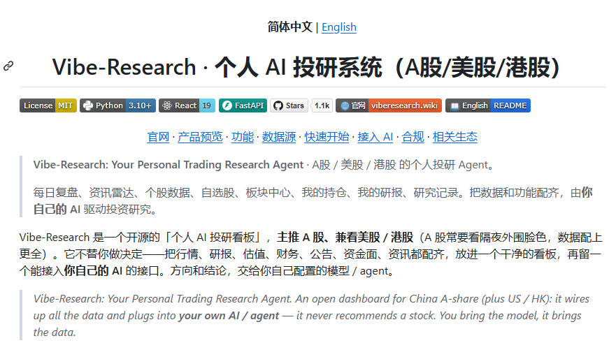
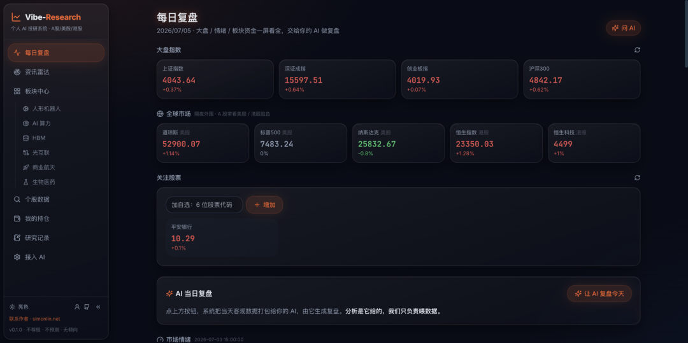
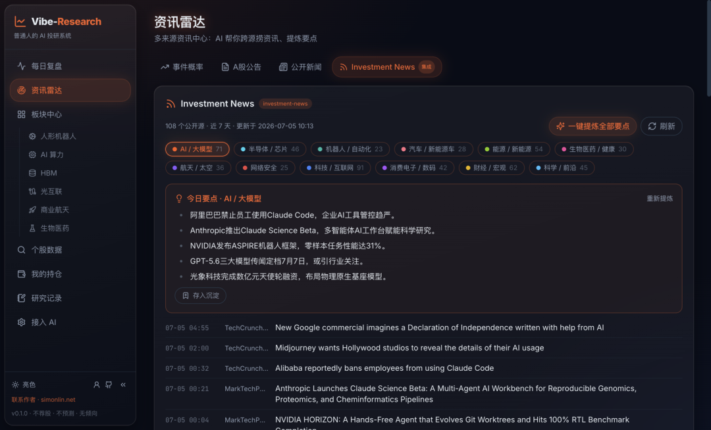

先说体验：夯爆。 虽然是个新库，但是已经彪到了1.1k星。作者也是大名鼎鼎的 @linsizhen ，他之前的几个库我都分享过，比如 a-stock-data 7.7k 星，TradingAgents 2.6k 星，global-stock-data 1.2k星。

说回这个库本身，Vibe-Research 是一个开源的 AI 投研系统，覆盖 A 股、美股和港股。它整合行情、财报、研报、公告、资金流、资讯等数据，支持每日复盘、自选股管理、多空辩论、持仓分析等功能，并可接入 Claude、Codex 等 AI 模型。它不提供买卖建议，而是把数据准备好，让你的 AI 帮你完成更高效、更系统的投资研究。


仓库地址： https://github.com/simonlin1212/Vibe-Research
还是那句话，现在一定要学会使用工具，真是事倍功半。而且市面上90%的好工具都是免费的。不一定非要用收费的工具一样可以达到好的效果。